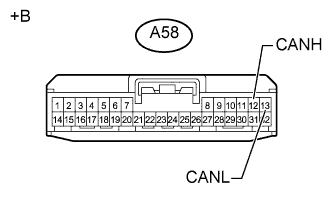
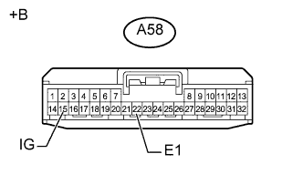

DTC U0182 Нарушение связи с ЭБУ системы AFS |
| Код DTC | Условие обнаружения DTC | Неисправный участок |
| U0182 | Отсутствует обмен данными с ЭБУ устройства поворота фар (ЭБУ системы AFS). |
|
| 1.ОТСОЕДИНИТЕ ПРОВОД ОТ ОТРИЦАТЕЛЬНОГО ВЫВОДА АККУМУЛЯТОРНОЙ БАТАРЕИ |
Отсоедините провод от отрицательного (-) вывода аккумуляторной батареи перед измерением сопротивления главной и вспомогательной шин.
| ДАЛЕЕ | |
| 2.ПРОВЕРЬТЕ ШИНУ CAN НА ОБРЫВ (ВСПОМОГАТЕЛЬНАЯ ШИНА ЭБУ УСТРОЙСТВА ПОВОРОТА ФАР) |
|  |
Отсоедините разъем A58 ЭБУ устройства поворота фар (ЭБУ системы AFS).
Измерьте сопротивление в соответствии со значениями, приведенными в таблице ниже.
| Контакты для подключения диагностического прибора | Положение переключателя | Заданные условия |
| A58-12 (CANH) - A58-13 (CANL) | Зажигание выключено | 54 - 69 Ом |
| *a | Вид спереди разъема со стороны жгута проводов: (к ЭБУ устройства поворота фар (ЭБУ системы AFS)) |
|
| ||||
| OK | |
| 3.ПРОВЕРЬТЕ ЖГУТ ПРОВОДОВ И РАЗЪЕМ (ЭБУ УСТРОЙСТВА ПОВОРОТА ФАР - АККУМУЛЯТОРНАЯ БАТАРЕЯ И МАССА) |
|  |
Подсоедините провод к отрицательному (-) выводу аккумуляторной батареи.
Измерьте сопротивление в соответствии со значениями, приведенными в таблице ниже.
| Контакты для подключения диагностического прибора | Условие | Заданные условия |
| A58-22 (E1) - масса | Всегда | Менее 1 Ом |
Измерьте напряжение в соответствии со значениями, приведенными в таблице.
| Контакты для подключения диагностического прибора | Положение переключателя | Заданные условия |
| A58-15 (IG) - масса | Зажигание включено (IG) | 11 - 14 В |
| *a | Вид спереди разъема со стороны жгута проводов: (к ЭБУ устройства поворота фар (ЭБУ системы AFS)) |
|
| ||||
| OK | ||
| ||